Главный экран¶
Описание¶
Главный экран Блиц Бюджет для Android содержит сводку по портфелям и счетам. Если в приложении используется несколько типов портфелей, то на экране будет выведено несколько сводок. В примерах ниже рассматривается вариант с одним типом портфеля Персональный.
В сводке отображаются остатки по каждому счету и всему портфелю в целом. Если для счета задан кредитный лимит, то также отображается доступная сумма.
Ниже остатков расположены фактические и планируемые суммы расходов и доходов. Также отдельно выводятся суммы переводов, если таковые были в выбранном периоде.
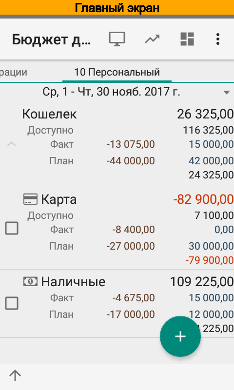 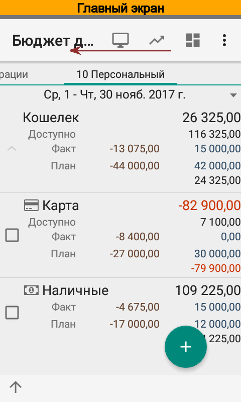 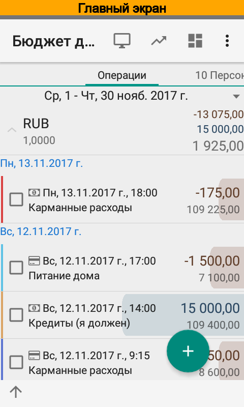{kind=link}
{kind=link}
{kind=link}
Кроме того, слева от набора сводок отображается список операций, в котором отображаются операции без разделения на типы портфелей.
Выбор периода¶
Период можно изменить при помощи редактора периодов, который расположен в верхней части экрана. Редактор поддерживает жесты перелистывания и выбора.
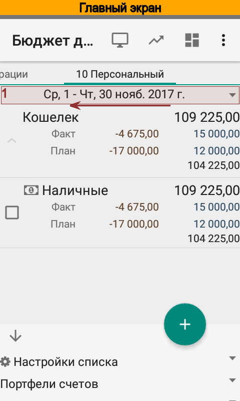 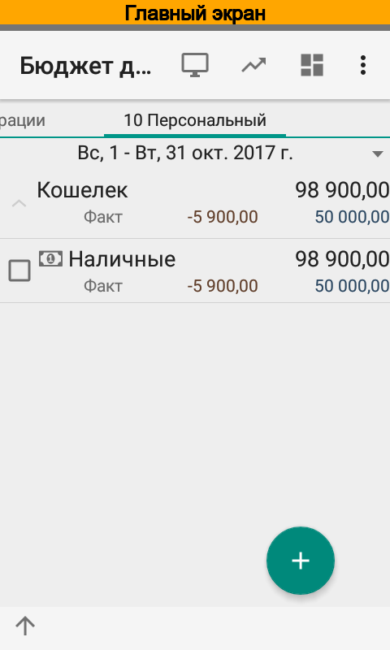 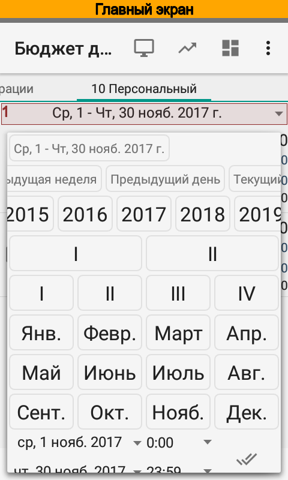{kind=link}
{kind=link}
{kind=link}
Настройки¶
Настройки сводки расположены в нижней части экрана. В настройках можно изменить группировку, заданную по умолчанию, отредактировать фильтр и изменить период. В фильтре можно задать отбор по портфелям, счетам, валютам и отключить отображение плана.
В следующем примере задается фильтр по счетам.
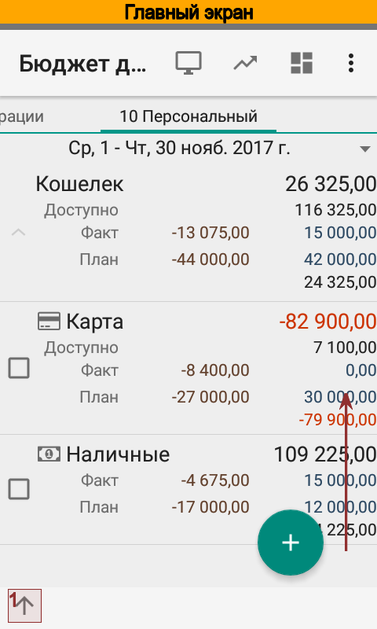 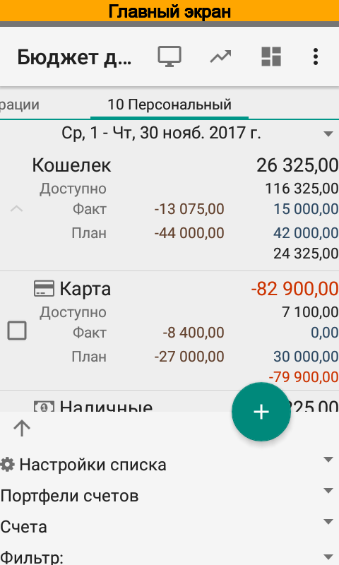 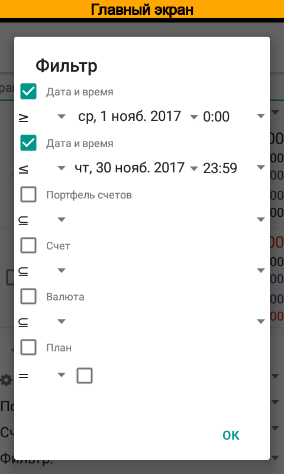 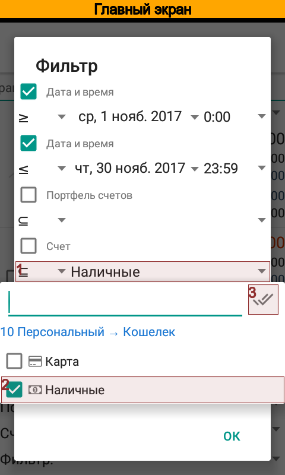 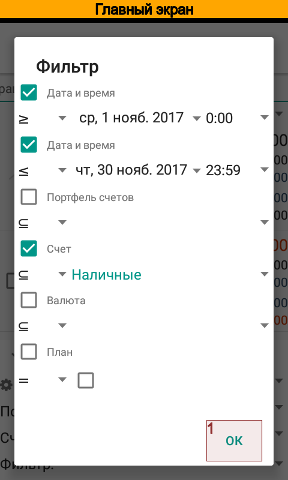 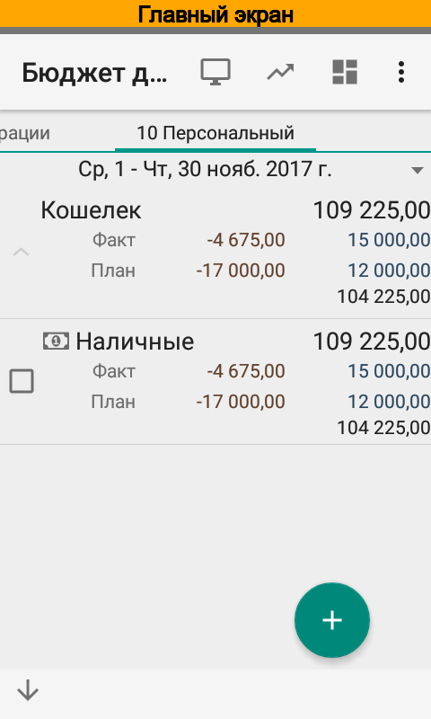{kind=link}
{kind=link}
{kind=link}
{kind=link}
{kind=link}
{kind=link}
Теперь на главном экране отображается только счет Наличные.
Сохранение настроек¶
Измененные настройки можно сохранить для последующего использования. Для этого следует выбрать Настройки отчета и создать новую настройку. Значения фильтра будут автоматически скопированы. Остается указать название настройки, например Сводка по одному счету, и нажать .
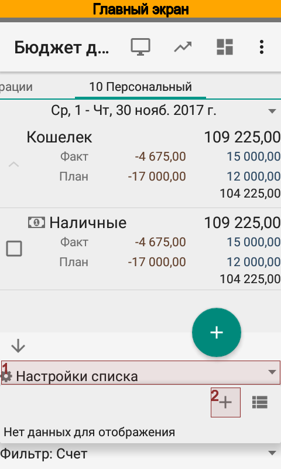 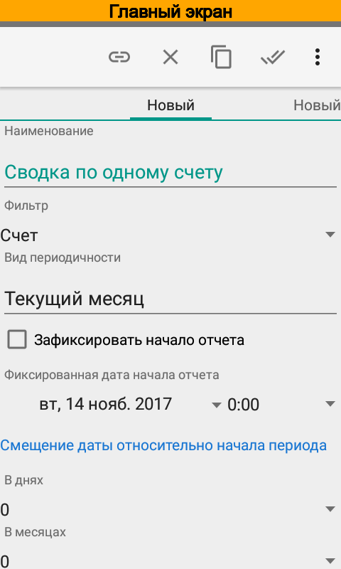{kind=link}
{kind=link}
Приложение позволяет иметь одновременно несколько сохраненных настроек и при запуске загружает для главного экрана последнюю использованную настройку.